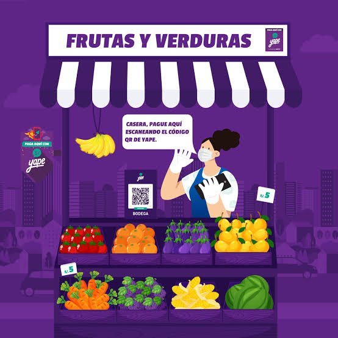
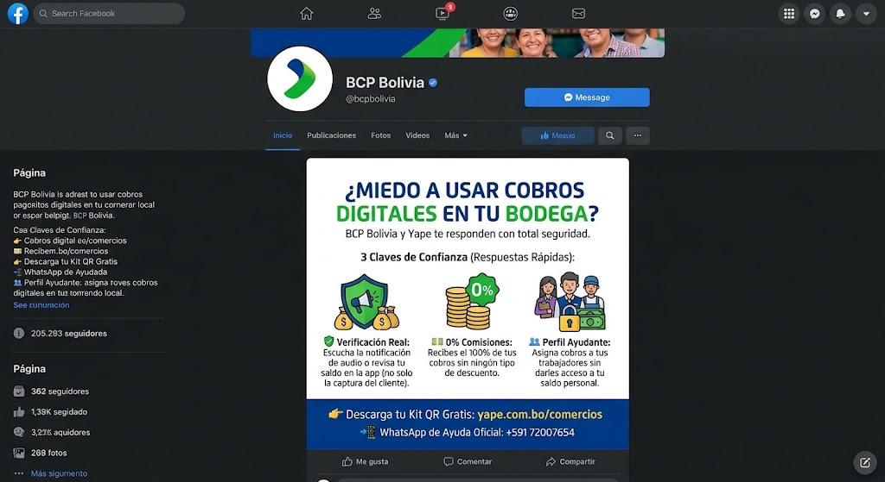
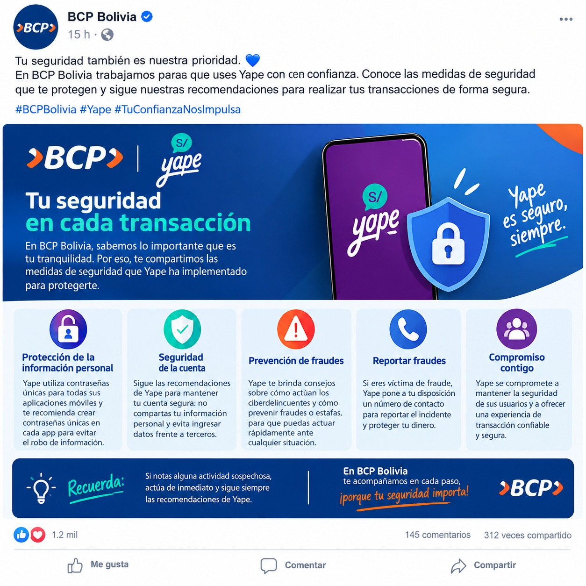
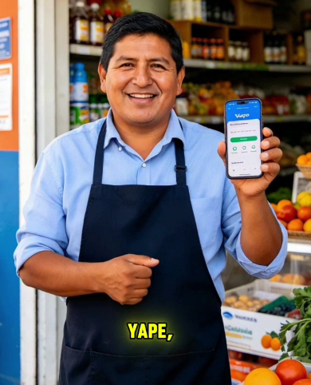
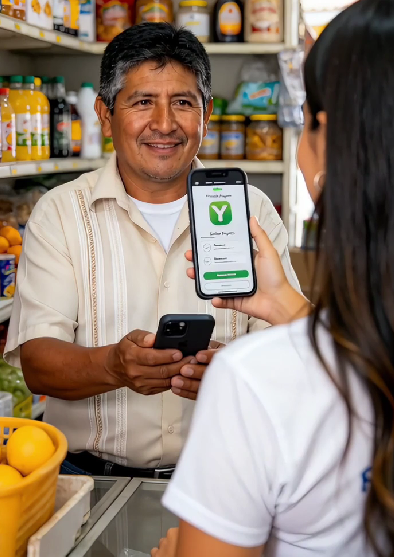

1
Nuevas formas de cobrar
Recibe pagos de tus clientes de manera rápida, por ejemplo con un código QR.
Digitalizar tu negocio puede ser más fácil de lo que imaginas. Aprende a utilizar herramientas digitales para cobrar, transferir y gestionar tus operaciones con mayor confianza.

Aprender a usar herramientas digitales te da más opciones para trabajar con tranquilidad.
Recibe pagos de tus clientes de manera rápida, por ejemplo con un código QR.
Realiza desde tu celular las operaciones digitales disponibles, sin hacer filas.
Resuelve ciertas operaciones en pocos minutos y dedica ese tiempo a tu negocio.
Consulta la información de tus movimientos cuando la herramienta lo permita.
Conoce recomendaciones sencillas para cuidar tu dinero y tu información.
Cada canal sirve para algo distinto. Aquí te explicamos para qué sirve cada uno.
Sirve para cobrar con QR, recibir notificaciones inmediatas de tus cobros, hacer transferencias, pagar servicios y recargar.
Conoce cómo funcionaLa aplicación del banco para realizar operaciones de forma sencilla, en cualquier momento y lugar.
Conoce cómo funcionaPara hacer consultas, reclamos, bloquear tarjetas, informarte sobre trámites o hablar con un asesor.
Conoce cómo funcionaUn canal para resolver dudas y recibir orientación desde tu celular.
Conoce cómo funcionaSi prefieres que te expliquen en persona, puedes acercarte a un agente o a una oficina.
Conoce cómo funciona| Si quieres… | Puedes usar… |
|---|---|
| Cobrar a tus clientes | Yape, con código QR |
| Hacer una operación desde tu celular | Banca móvil |
| Bloquear una tarjeta o hacer un reclamo | Banca por teléfono |
| Resolver una duda rápida | WhatsApp oficial |
| Que te expliquen en persona | Agentes y oficinas |


Hazlo a tu ritmo. Empieza con una operación que conozcas y repítela las veces que necesites.
Son pasos generales; las pantallas pueden variar según la versión de la aplicación.
Mira cómo se usa una herramienta digital en un negocio real.
¿No carga el video? Ábrelo en YouTube.

Un ejemplo de cómo preguntar y resolver dudas al empezar.
Ver video
Cursos gratuitos de educación financiera para aprender poco a poco.
Conocer másCuidar tus cuentas y tu información es parte de usar bien lo digital.

Otros comerciantes también empezaron con dudas. Conoce cómo usan las herramientas digitales en su negocio.

Negociante. Mira su experiencia en video.
Ver su historia
Comerciante. Mira su experiencia en video.
Ver su historiaRespuestas cortas a las dudas más comunes.
Un celular con internet y la aplicación oficial de la herramienta que quieras usar. Consulta los requisitos exactos en los canales oficiales.
Puedes ver los videos y guías de esta página, practicar con operaciones sencillas y pedir orientación en los canales oficiales o en un agente.
Comunícate cuanto antes con los canales oficiales de atención, como la banca por teléfono, el WhatsApp oficial, un agente o una oficina.
Entra siempre desde las páginas y aplicaciones oficiales. Desconfía de números o enlaces que te lleguen sin que los hayas pedido.
Aprende a tu ritmo y busca orientación a través de los canales oficiales de atención.
Solicitar orientaciónNunca compartas contraseñas, códigos de seguridad ni información bancaria confidencial.